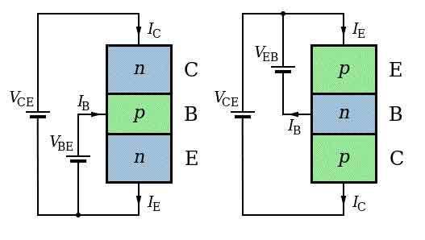
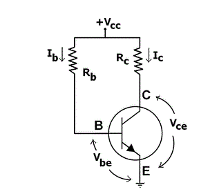
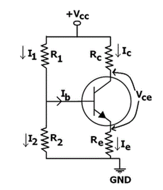
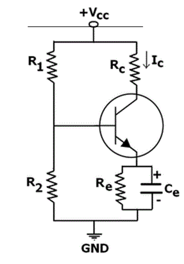

• Saturation Mode
• Active Mode
• Biasing Circuits
• Fixed Bias or Base Bias
Collector to Base Bias
Self Bias or Voltage Divider Bias
Biasing of the bipolar junction transistor (BJT) is the process of applying external voltages to it. In order to use the BJT for any application like amplification, the two junctions of the transistor CB and BE should be properly biased according to the required application. Depending on whether the two junctions of the transistor are forward or reverse biased, a transistor is capable of operating in three different modes.
Cutoff Mode of BJT
The BJT is fully off in this state. In the cutoff mode both the base emitter as well as collector base junction is reverse biased. The BJT is equivalent to an open switch in this mode.
Saturation Mode of BJT
The transistor is fully on in this state. The CB as well as BE junctions are forward biased. The BJT operates like a closed switch in the saturation mode.
If a BJT is in saturation mode than it should satisfy the following condition,
Where βDC is common emitter electric current amplification factor or electric current gain.
Active Mode of BJT
In order to use the transistor as an amplifier, it must be operated in the active mode. The BE junction is forward biased whereas the CB junction is reverse biased. Figure below shows both n-p-n and p-n-p transistors biased in the active mode of operation.
Biasing Circuits of BJT
To make the Q point stable different biasing circuits are tried. The Q point is also called as operating bias point, is the point on the DC load line (a load line is the graph of output electric current vs. output voltage in any of the transistor configurations) which represents the DC electric current through the transistor and voltage across it when no ac signal is applied. The Q point represents the DC biasing condition. When the BJT is biased such that the Q point is halfway between cutoff and saturation than the BJT operates as a CLASS-A amplifier. The three circuits or biasing arrangements which are practically used are explained below.
Fixed Bias or Base Bias

In this condition a single power source is applied to the collector and base of the transistor using only two resistors. Applying KVL to the circuit,
Thus, by merely changing the value of the resistor the base electric current can be adjusted to the desired value. And by using the electric current gain (β) relationship, IC can also be found out accordingly. Hence the Q point can be adjusted just by changing the value of the resistor connected to the base.
Collector to Base Bias

This connection is mostly used to stabilize the operating point against temperature changes. In this type, the base resistor is connected to the collector instead of connecting it to the supply. So any thermal runaway will induce IR drop in the collector resistor. The base electric current can be derived as,
If VBE kept constant and there is an increase in temperature, then the collector electric current increases. However, a larger collector electric current causes the voltage drop across the collector resistor to increase, which reduces the voltage across the base resistor. This will reduce the base current, hence resulting less collector current. Because an increase in collector electric current with temperature is opposed, the operating point is stable.
Self Bias or Voltage Divider Bias
The circuit diagram for self bias is shown below. This is the most widely used biasing circuit.

The electrical resistances R 1 and R2 form a potential divider arrangement to apply a fixed voltage to the base.
Consider only the base circuit, the approximate voltage across the base is
Consider only the collector circuit, the approximate emitter electric current will be,
In the above circuit, as the emitter resistor causes ac as well as DC feedback the AC voltage gain of the amplifier is reduced. This can avoided by connecting a capacitor in parallel with the emitter resistor as shown below.

 by
by